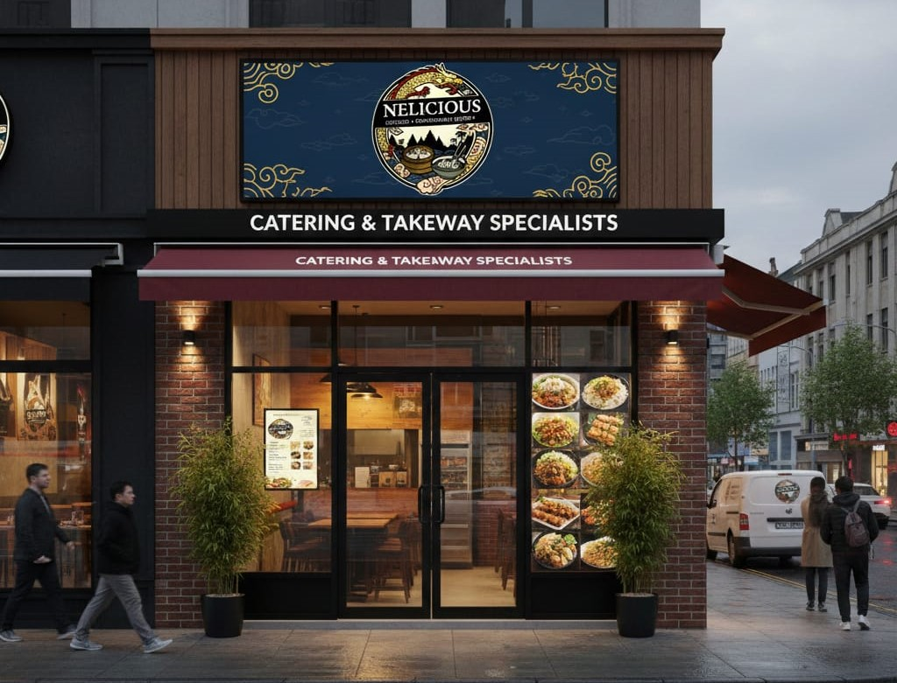
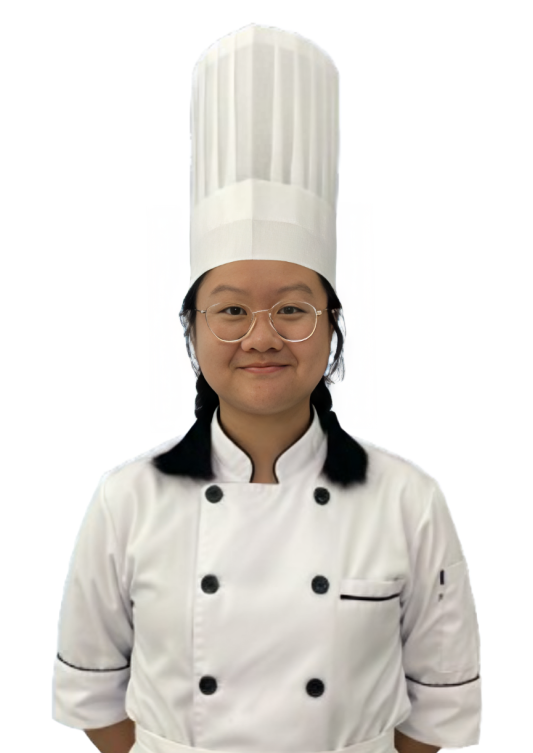
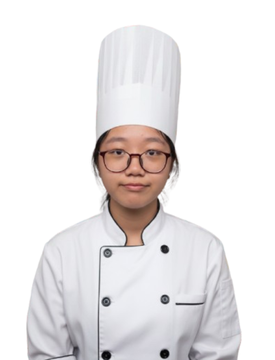
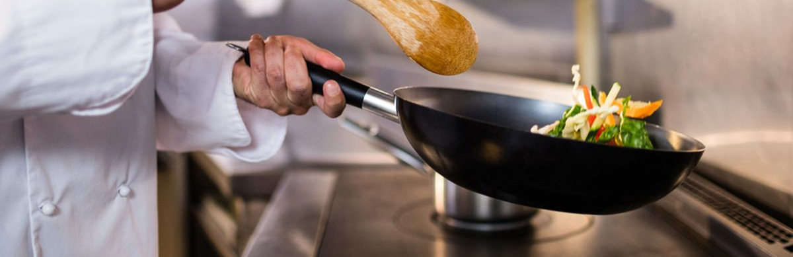

Tentang Nelicious Catering
Nelicious Catering Sehat menyediakan makanan sehat, fresh, dan bergizi setiap hari. Kami berkomitmen memberikan hidangan terbaik demi mendukung gaya hidup sehat pelanggan kami.

Keunggulan Kami
Menggunakan bahan segar dan berkualitas tinggi
Tanpa MSG Berlebihan, aman untuk konsumsi harian
Banyak pilihan menu sehat & lezat
Dimasak oleh chef profesional
Diproduksi setiap hari dengan standar tinggi secara higienis
Meet the Chef


Chef kami berpengalaman lebih dari 10 tahun dalam membuat semua hidangan dengan standar kualitas yang tinggi.
